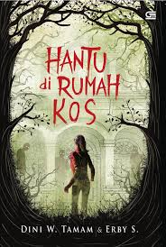
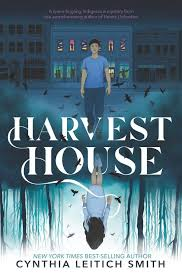

Ketika Dina, seorang mahasiswa pendatang, pindah ke rumah kos yang terletak di sudut kota, ia tidak pernah menyangka akan menghadapi hal-hal aneh. Suara langkah kaki di tengah malam, pintu yang terbuka sendiri, hingga bayangan misterius mulai mengusik hari-harinya.
Bersama teman-teman kosnya, Dina mencoba mengungkap rahasia kelam rumah itu. Namun, semakin jauh mereka menyelidiki, semakin jelas bahwa ada sesuatu—atau seseorang—yang tidak ingin rahasia itu terungkap.
Apakah Dina dan teman-temannya dapat bertahan, atau akankah mereka menjadi korban berikutnya dari rumah kos berhantu ini?
Buku ini memadukan ketegangan, misteri, dan sentuhan supranatural yang akan membuat pembaca terus penasaran hingga halaman terakhir.

Di sebuah desa kecil yang dikelilingi ladang luas, berdirilah Harvest House, sebuah rumah tua yang menyimpan banyak misteri. Rumah itu dikenal oleh penduduk setempat sebagai tempat di mana orang yang masuk tidak pernah kembali. Namun, rasa penasaran membawa sekelompok pemuda untuk menyelidiki rumah tersebut.
Saat mereka memasuki Harvest House, keanehan mulai terjadi. Suara bisikan dari dinding, bayangan yang bergerak tanpa wujud, dan suasana mencekam perlahan mengungkap masa lalu kelam rumah itu. Mereka menemukan bahwa rumah ini dulunya adalah tempat pertemuan sebuah sekte gelap yang melakukan ritual aneh untuk memanen jiwa manusia.
Kini, para pemuda tersebut harus berlomba dengan waktu untuk keluar hidup-hidup. Namun, Harvest House tidak akan melepaskan mereka dengan mudah. Dengan teka-teki yang harus dipecahkan dan bayangan yang terus mengintai, mereka harus menghadapi ketakutan terbesar mereka.
"Harvest House" adalah kisah horor penuh misteri yang akan membawa pembaca ke dalam suasana tegang dan mencekam hingga halaman terakhir.
Tanggal Posting 4 januari 2024
kelompokpbw@gmail.com
Kembali